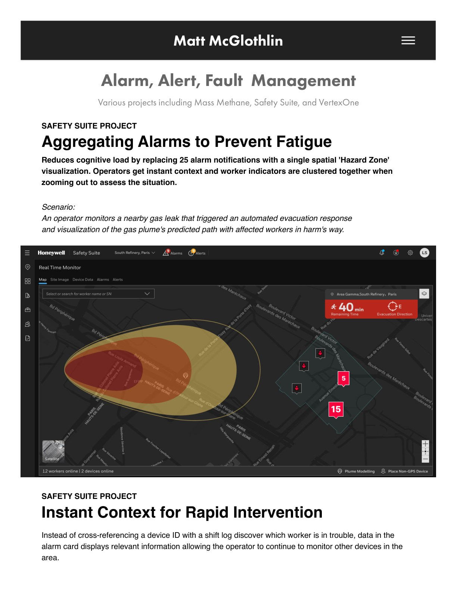
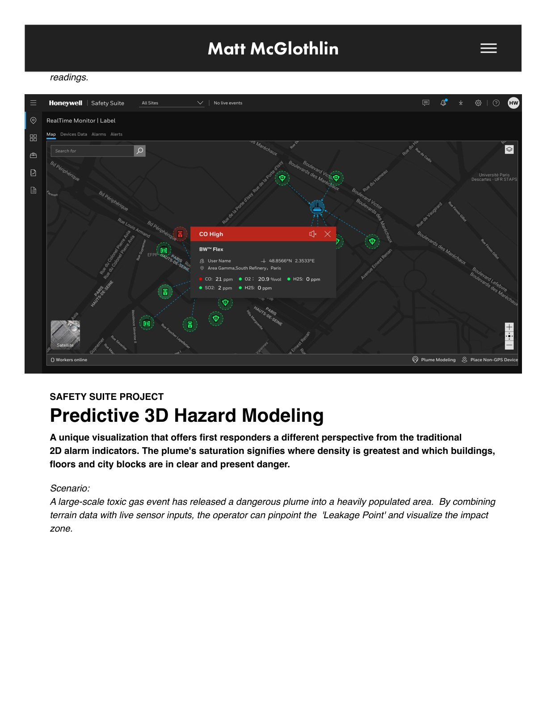
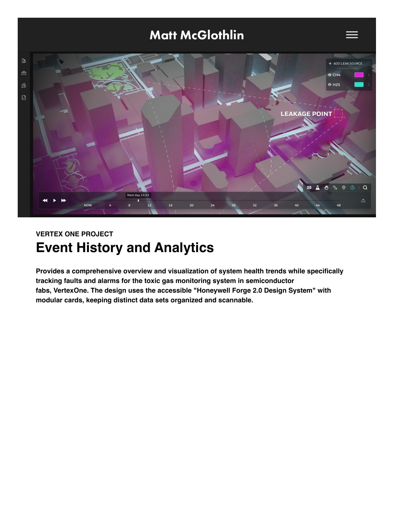
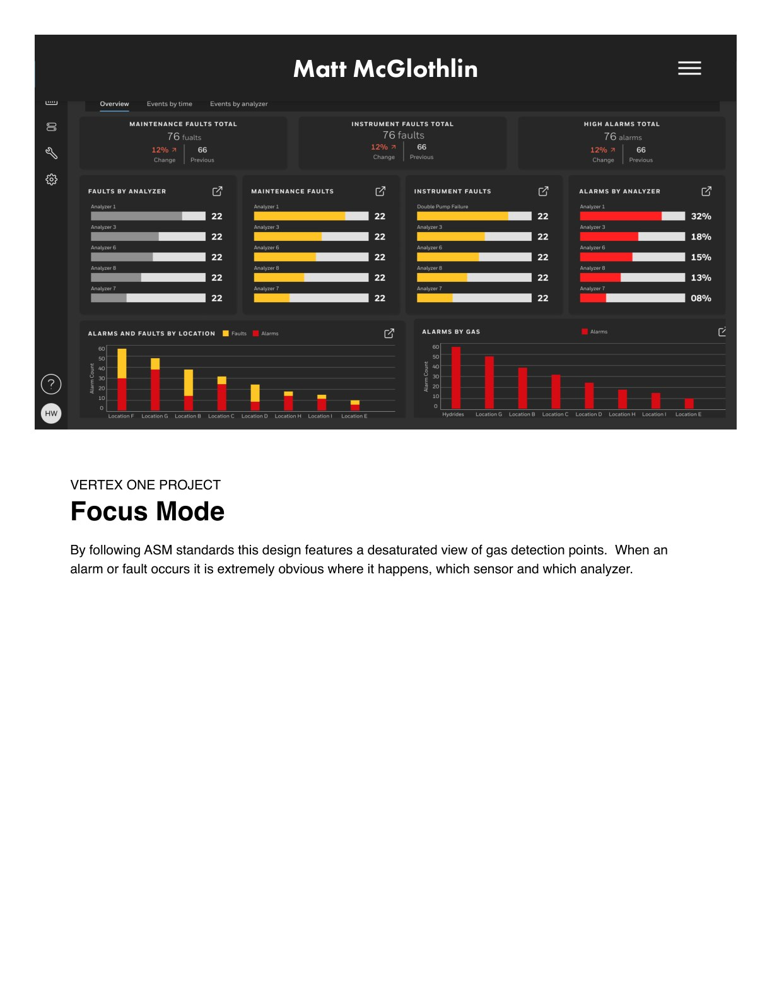
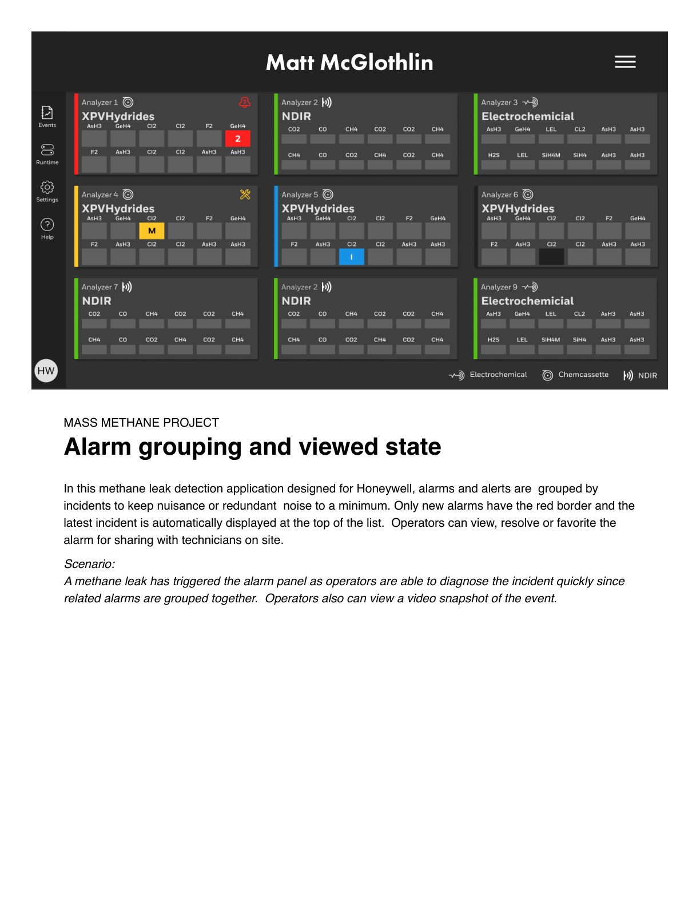
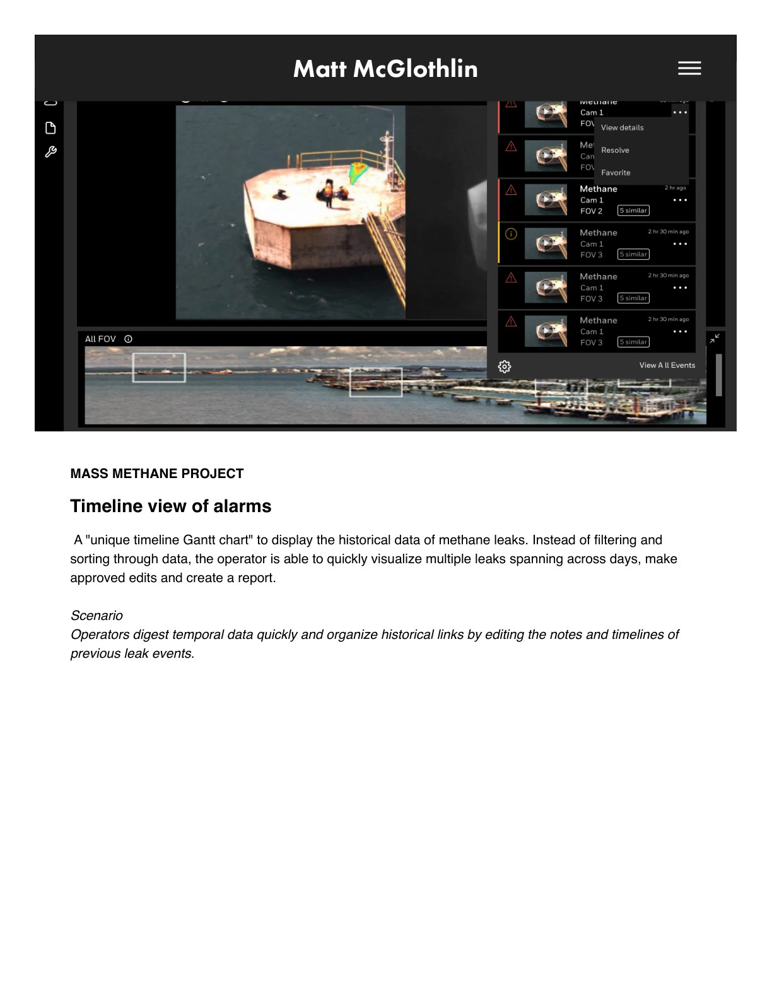

Honeywell · Data Visualization · Safety UX
Alarm, Alert & Fault Management
Rethinking alarm experiences across Mass Methane, Safety Suite, and VertexOne — replacing alarm fatigue with instant context and rapid intervention.
Aggregating Alarms to Prevent Fatigue
Twenty-five separate alarm notifications become a single spatial 'Hazard Zone' visualization: operators get instant context, with worker indicators clustered as they zoom out to assess a gas plume's predicted path and who is in harm's way.
Predictive 3D Hazard Modeling
A unique visualization gives first responders a perspective traditional 2D indicators can't: plume saturation shows where density is greatest and which buildings, floors, and city blocks are in danger, combining terrain data with live sensor inputs.
Instant Context and Analytics
When a worker's device triggers a High CO alarm, the system isolates the signal and displays the real-time reading alongside the worker's identity and coordinates. Event history and analytics for VertexOne use the accessible Honeywell Forge 2.0 design system with modular, scannable cards.





